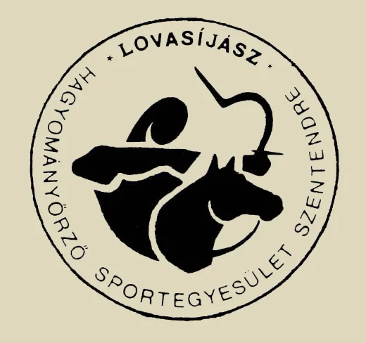

LOVAS KÉPZÉSI RENDSZER 2006. NOVEMBER 25-TŐL
A lovasoktatásban rendkívül fontos a tanulók reális külső és önértékelése. Mind az oktatónak, mint a gyakorlást vezető személynek, mind pedig az oktatásban résztvevő tanulónak érdeke, hogy megbízható, objektív visszaigazolást kapjon a gyakorlások eredményességéről, vagy eredménytelenségéről. Mindegyiküknek tisztán kell látnia a tanuló aktuális felkészültségi szintjét a fejlesztéshez, pedig meg kell határozniuk a gyakorlások soron következő célját.
Mindezek érdekében, és megkönnyítése, valamint átláthatóvá tétele céljából a Lovasíjász Hagyományőrző Sportegyesület a lovasok által elérhető képzettségi szint tudásanyagát három részre osztotta, és ezeket a szinteket az alábbiakban határozta meg.Tanuló 1. – ló 3.
A ló felvezetése, szőr és pataápolás. Kantározás. Felugrás. Biztos egyensúlyi helyzet kialakítása. Jó test és lábtartás. Lehajlás, fordulás mindkét irányba, hátradőlés lépésben.
Felemelkedés folyamatos lépésben. (min.3 körön)
Ügetés jármódban biztos egyensúlyi helyzet.
A ló biztos elindítása és megállítása, fordítása bal, jobb irányba, átléptetése akadály felett.Begyakoroltatás: állandó felügyelet mellett, folyamatos segítséggel. Szükség szerint futószárazással. Az irányítás gyakorlása vágóállványokkal vagy oszlopokkal, akadállyal, tereptárgyakkal.
Vizsgáztatás: felügyelet mellett, önálló munkával. Ügetés futószáron.
Vizsgafeladatok:
1. A ló felvezetése és felkantározása. Szőr és pataápolás.
2. Felugrás.
3. Lépés és ügetés futószáron, megállítás, lehajlás, fordulás hátradőlés és felemelkedés bemutatása.
4. A ló elindítása és megállítása utasításra, többszöri ismétléssel.
5. Irányítás vágóállványok között és szabad területen, utasítás szerint. Átléptetés akadály felett.A feladatokat min. 3 különböző lóval kell végrehajtani. Az önálló munka során, a ló nem hajthatja le a fejét, és nem állhat meg indokolatlanul. Egy szóbeli segítségadás megengedett.
Nagyon fiatal, 140 cm-nél alacsonyabb tanulók esetében az 1. 2. vizsgafeladatok részleges vagy teljes végrehajtásától el lehet tekinteni.Tanuló 2. – ló 2.
Biztos egyensúlyi helyzet. Ügetés. Jó test és láb tartás minden jármódban. Felemelkedés és fordulás minden jármódban. (min.3 körön)
A ló biztos elindítása és megállítása, lépésütemének váltása, irányítása minden jármódban.
Vágta jármódban biztos egyensúlyi helyzet.
Szlalom, nyolcas folyamatos ügetésben. Irányítás egy kézben tartott kantárral és anélkül, súllyal és hanggal. Közös munka, tereplovaglás.Begyakoroltatás: önállóan, felügyelet mellett, segítséggel, egyénileg és csoportban. Az irányítás gyakorlása vágóállványokkal vagy oszlopokkal, akadállyal, tereptárgyakkal.
Vizsgáztatás: utasításra, önálló munkával.
Vizsgafeladatok:
1. A ló felvezetése és felkantározása, szőr és pataápolás – időkereten belül. Felugrás.
2. Lépés és ügetés, megállítás, fordulás és felemelkedés bemutatása.
3. A ló lépésütemének váltása utasításra, többszöri ismétléssel.
4. Irányítás egy kézben tartott kantárral és anélkül, súllyal és hanggal, vágóállványok között és szabad területen, utasítás szerint. Átléptetés akadály felett.
5. Tereplovaglás csapatban, pozíciót tartva, közepesen nehéz terepen.A feladatokat min. 3 különböző lóval kell végrehajtani. A munka során, a ló nem hajthatja le a fejét, és nem állhat meg, vagy fordulhat el indokolatlanul, előírt pozícióját csapatban tartania kell. A ló fegyelmezése a gyakorlatok közben nem kívánatos. Egy szóbeli segítségadás megengedett.
Tanuló 3. – ló 1. 2. 3.
Biztos egyensúlyi helyzet. Vágta. Jó test és lábtartás minden jármódban.
A lépésütemének biztos váltása, a ló precíz irányítása minden jármódban. Irányítás súllyal, eszközök használata közben. Ugrás. A ló fektetése. Nyergelés. Lovaglás nyeregben, a kengyel használata.Begyakoroltatás: önállóan, felügyelet mellett, egyénileg és csoportban. Az irányítás gyakorlása vágóállványokkal vagy oszlopokkal, akadállyal, tereptárgyakkal eszközök használata közben.
Vizsgáztatás: utasításra, önálló munkával.
Vizsgafeladatok:
1. A ló lépésütemének váltása utasításra, többszöri ismétléssel.
2. Irányítás vágóállványok között és szabad területen, egyénileg és csapatban, utasítás szerint.
3. Akadály átugrása és fektetés
4. Nyergelés, lovaglás, kengyelhasználat nyeregben. Tereplovaglás csapatban, pozíciót tartva, nehéz terepen.Szentendre, 2006. november 25.

Kelemen Zsolt az LHSE elnökségi tagja

LOVASHARC.HU